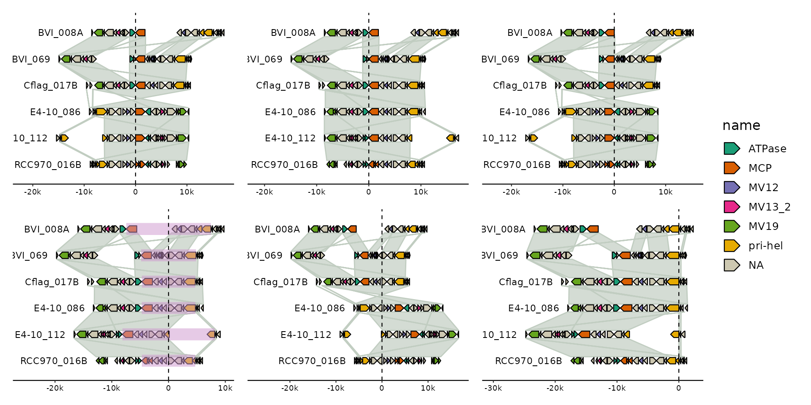
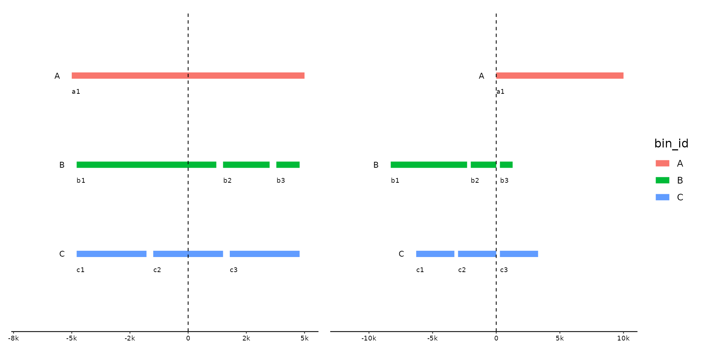

Align your genomes relative to target features, such as genes or regions of
interest. Use the ... argument to indicate a subset of features in one
track as targets. If multiple features are selected per bin, they are
treated as a single feature spanning from the leftmost to the rightmost end.
The genomes will be shifted so that the targets features align according to
the .justify.
Arguments
- x
gggenomes object
- ...
filter expression to identify target features in target track. Works like
dplyr::filter()<data-masking>.- .track_id
track to pull from, default "genes"
- .justify
alignment position, one of "left", "center", "right" or numeric between 0 and 1, default "left"
Examples
library(patchwork)
p <- gggenomes(emale_genes, links = emale_ava) +
geom_link() +
geom_gene(aes(fill = name)) +
scale_fill_brewer(palette = "Dark2", na.value = "cornsilk3") +
geom_bin_label()
#> No seqs provided, inferring seqs from feats
pp <-
# left-align on MCP gene
p |> align(name == "MCP") +
# left-align on MCP gene after flipping bins
p |> sync() |> align(name == "MCP") +
# right-align on MCP gene
p |> align(name == "MCP", .justify = "right") +
# center-align on MCP + pri-hel gene
p |> sync() |> align(name %in% c("MCP", "pri-hel"), .justify = "center") |>
# and highlight the feature block we are aligning to
locate(name %in% c("MCP", "pri-hel"), .expand = 0, .max_dist = 1e6) +
geom_feat(data = feats(loci), color = "plum3", alpha = .5, linewidth = 5) +
# center-align by fraction on MCP and pri-hel gene (hjust-like behaviour)
p |> align(name %in% c("MCP", "pri-hel"), .justify = .5) +
# right-align by fraction after flipping
p |> sync() |> align(name %in% c("MCP", "pri-hel"), .justify = 1)
#> Flipping: E4-10_086,E4-10_112,RCC970_016B
#> Flipping: E4-10_086,E4-10_112,RCC970_016B
#> Adding 'loci' track. Plot with `geom_feat(data=feats(loci))`
#> Flipping: E4-10_086,E4-10_112,RCC970_016B
pp + plot_layout(guides = "collect") & geom_vline(xintercept = 0, linetype = 2)

# multi contig
s0 <- tibble::tibble(
bin_id = c("A", "B", "B", "B", "C", "C", "C"),
seq_id = c("a1", "b1", "b2", "b3", "c1", "c2", "c3"),
length = c(1e4, 6e3, 2e3, 1e3, 3e3, 3e3, 3e3)
)
p <- gggenomes(seqs = s0) +
geom_seq(aes(color = bin_id), size = 3) +
geom_bin_label() +
geom_seq_label() +
expand_limits(color = c("A", "B", "C"))
#> Warning: Using `size` aesthetic for lines was deprecated in ggplot2 3.4.0.
#> ℹ Please use `linewidth` instead.
#> ℹ The deprecated feature was likely used in the gggenomes package.
#> Please report the issue at <https://github.com/thackl/gggenomes/issues>.
pp <-
# center on everything - just omit ...
p |> align(.track_id = "seqs", .justify = .5) +
# right-align on contig ending in "2"
# NOTE: there is no 2nd contig in bin A, so nothing is aligned there
p |> align(stringr::str_detect(seq_id, "2"), .track_id = "seqs", .justify = "right")
pp + plot_layout(guides = "collect") & geom_vline(xintercept = 0, linetype = 2)
